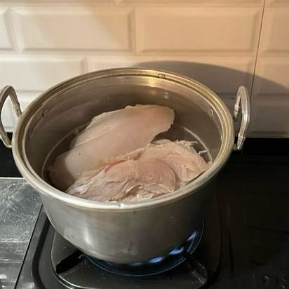

Ingredients
1 kg Cut Chicken

200 g Long Bean Sprouts
16 Cloves Shallots

10 Cloves Garlic

2 Stalks Green Onions

5 Sprigs Celery Leaves
5 Bay Leaves

8 Kaffir Lime Leaves
2 Inches Ginger
6 Roasted Candlenuts
2 Stalks Lemongras

1 tbsp Palm Sugar
1 tbsp Salt
Vermicelli
½ tbsp Ground Coriander
1 tsp Ground Cumin
1 tsp Ground Pepper

1 tsp Mushroom Stock Powder

2.5 Liters Water